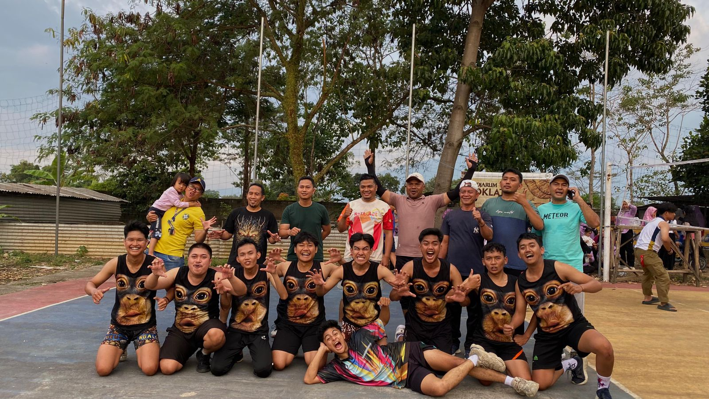

Arsip Kegiatan
Arsip kegiatan Karang Taruna XVI Soreang Residence

Sosial
Baksos Kebersihan Lingkungan
Program kebersihan berupa kerja bakti komplek Soreang Residence bersama anggota karang taruna yang berkolaborasi dengan warga.
15 Januari 2024

Olahraga
Turnamen Bola Volly Karang Taruna
Kompetisi bola volly antar RT dengan partisipasi tinggi dari semua warga Komplek Soreang Residence.
22 Januari 2024

Budaya
SOREFEST 2025
Perayaan budaya lokal dengan menampilkan pentas seni yang diisi oleh penampilan warga serta berbagai kuliner khas nusantara.
5 Februari 2024

Sosial
Memperingati Isra Mi'raj
Acara pengajian dan berbagi ke anak yatim piatu dalam rangka memperingati Isra Mi'raj.
10 Februari 2024

Olahraga
Gerak Jalan dan Senam Sehat
Program kesehatan dengan jalan sehat keliling lingkungan Desa Gandasari yang di lanjut dengan senam sehat.
24 Februari 2024